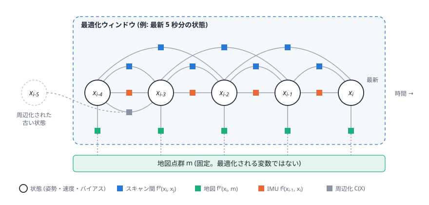
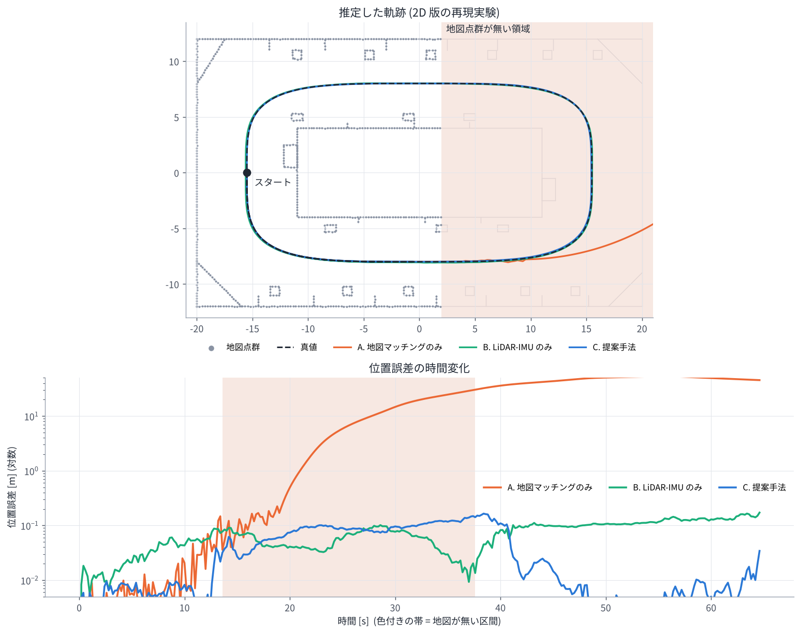

08. 論文精読ガイド
ここまでの章の内容を使って、論文を最初から最後まで読み解きます。 論文の PDF を横に開いて、このページと見比べながら読んでください。
このガイドについて このガイドは論文 PDF の内容をもとに作成していますが、細部 (式の添字、図番号、記述の位置など) は 必ず原文で確認してください。原文と食い違っている点を見つけたら、それも良い勉強になります。
- 論文: 小出 健司, 大石 修士, 横塚 将志, 阪野 貴彦, 「点群・IMU 制約のウィンドウ最適化に基づく既知地図上での 6DoF 姿勢推定」, ROBOMECH2023
- 英題: Window-Optimization-based Range-IMU Localization on a 3D Prior Environmental Map
- PDF: https://staff.aist.go.jp/k.koide/assets/pdf/robomech2023.pdf
0. 読む前に: この論文はどんな種類の論文?
国内の講演会 (ロボティクス・メカトロニクス講演会) の予稿で、ページ数が限られています。 そのため、
- 手法の土台 (オドメトリ、VGICP、IMU 事前積分、iSAM2) は 参考文献に任せて 短く書かれている
- 実験は 軌跡の図による定性的な比較 が中心
という特徴があります。この教材の 01〜06 章は、まさにその「参考文献に任された部分」を補うためのものです。
1. 背景と問題設定を読む
読みどころ
- 既知の 3D 地図の上で 6DoF 姿勢を推定したい (自己位置推定)
- 既存手法は地図とのマッチングへの依存が大きく、地図の欠損や環境変化に弱い
- そこで、地図マッチング + 前後フレームのマッチング + IMU を ウィンドウ最適化で密結合 する
確認しよう
2. 提案手法を読む
2.1 ベースになっている手法
提案手法は、著者らの 固定ラグ平滑化に基づく Range-IMU 融合オドメトリ [5] (ICRA 2022) に、 既知地図とのマッチングを追加したものです。 「Range」は LiDAR のような距離センサの総称で、RGB-D カメラも含みます。
2.2 ファクターグラフの図を読む
論文のファクターグラフの図では、ウィンドウ内のセンサ状態 (変数) が並び、 それらが点群マッチング因子と IMU 因子でつながり、さらに各状態が地図とのマッチング因子を持つ様子が描かれています。 この教材の図で言うと次のものです。

- 変数 (丸) は何を表す? 中身は何次元? → 状態 \(\mathbf{x}_i = [\mathbf{T}_i, \mathbf{v}_i, \mathbf{b}_i]\) (姿勢 6 + 速度 3 + バイアス 6 = 15 自由度)
- 地図は変数? → 固定された既知の点群で、変数ではない (05 章)
2.3 目的関数を 1 項ずつ読む
| 項 | 何をしている? | 中身 | 関連する章 |
|---|---|---|---|
| 第 1 項 | 各状態を、その 1 つ前・2 つ前のフレームと点群で比べる | VGICP のコスト。相対姿勢 T_i^-1 T_j で点を移して分布同士の距離を測る | 03, 01 |
| 第 2 項 | 各状態を地図点群と比べる | VGICP のコスト。地図は世界座標に固定 | 03, 07 |
| 第 3 項 | 連続する状態の動きが IMU と整合しているか | IMU 事前積分の残差 (回転・速度・位置) | 04 |
| 第 4 項 | ウィンドウから出た過去の情報 | 周辺化で得た 2 次の事前分布 | 06 |
読みどころ: 式の和の範囲
本文では「地図との対応付けは現在フレームに対して生成する」という説明になっていますが、式では ウィンドウ内の全状態について和を取っています。これは、
- 新しいフレームが来たときに、そのフレームの地図因子を追加する
- 追加された因子は、そのフレームがウィンドウ内にある間は残り続ける
と考えると矛盾しません (GLIM のオドメトリが、新しいフレームが来たときにそのフレームの因子を追加していくのと同じ流れ)。 原文の記述を読んで、自分はどう解釈したかをメモしておきましょう。
- なぜ前後フレームとのマッチングを 2 フレーム分 (\(j = i-2, i-1\)) 取るのか?
→ 1 フレームだけだと、そのマッチングが失敗したときに鎖が切れる。2 つあると冗長性が生まれる
(GLIM の
full_connection_window_size= 2 と同じ) - 地図にないところの点は、第 2 項でどう扱われる? → 07 章 の 3 節
2.4 各構成要素
| 要素 | 論文で使っているもの | 教材の章 |
|---|---|---|
| 点群マッチング | VGICP [6] (GICP [7] の分布対分布マッチングをボクセル化。GPU で高速) | 03 |
| IMU | 事前積分 [8] (線形化のたびに再積分しなくてよい) | 04 |
| 最適化 | iSAM2 [9] (ベイズ木によるインクリメンタル最適化)。周辺化にも使う | 05, 06 |
| 実装 | GTSAM | 05, 09 |
| センサ | 特定のセンサに依存しない (LiDAR、RGB-D カメラなど) | 03 |
3. 実験を読む
3.1 設定
- 実験環境の図 (図 2) で、点線で囲まれた領域 以外 の地図点群をすべて削除し、 「地図が大きく欠けている」状況を人工的に作っている
- 比較手法: NDT スキャンマッチング、hdl_localization [10] (UKF)、mcl3d_ros [4] (パーティクルフィルタ + 距離場ベースの最適化)
確認しよう
- 地図を削除する実験設定は、どんな現実の状況を想定している? (地図の一部しか作っていない、環境が変わった …)
- 3 つの比較手法は、それぞれどんな仕組み? → 07 章
3.2 結果 (図 3 の軌跡)
- 既存手法は、地図が欠損した領域に入った時点で推定誤差が大きくなり、推定が破綻した
- 提案手法は地図への依存が小さく、点群が完全に削除された領域でも軌跡を推定できた
- 地図のある領域に戻ると地図マッチングが再び有効になり、ドリフトが抑えられた
図の読み方のコツ: 軌跡の図では、(1) 地図が残っている範囲、(2) 各手法の軌跡が地図の欠けた領域に 入ったところ、(3) 戻ってきたところ の 3 か所に注目します。数値の表がないので、「どこで」「どう」崩れたかを 図から読み取るのがポイントです。
3.3 2D 再現実験で同じ現象を見る
演習 7 は、この実験を 2D で再現したものです。HTML 版では結果をアニメーションで再生できます。

4. まとめを読む
論文は、地図マッチングと前後フレームのマッチングを 同じ誤差関数で扱い、点群と IMU の誤差を ウィンドウ内で同時に最小化することで、地図の欠損や変化に頑健な自己位置推定を実現した、とまとめています。
5. 論文に書かれていないこと (自分で調べる・考える)
予稿という性質上、次のような点は本文から読み取れません。GLIM のコードや関連論文で補ったり、 自分で実験して確かめたりする題材になります。
- ウィンドウ長・フレーム数などの具体的な設定値の根拠 (GLIM の既定値は
smoother_lag= 5 秒) - キーフレームの扱い (GLIM のオドメトリにはあるが、論文の式には出てこない) → 06 章 4 節
- 計算時間、使用した GPU
- 定量的な精度 (ATE など)
- 地図因子と前後フレーム因子の重みのバランス、外れ値対策
6. 最終チェック
00 章 の最終目標の質問に、答えられるようになったか確認しましょう。
- なぜ地図マッチングだけでなく、前後フレームのマッチングもコスト関数に入れるのか?
- IMU 事前積分を使うと、何が効率的になるのか?
- VGICP が GPU と相性が良いのはなぜか?
- ウィンドウから外れた状態をただ捨てずに「周辺化」するのはなぜか?
- フィルタ (UKF・パーティクルフィルタ) とウィンドウ最適化の違いは何か?
- 提案手法が苦手そうな状況はどんなときか?
答えの例
- 地図が欠けている・変わっている場所でも、前後フレームのマッチングと IMU で推定を続けるため。地図マッチングを「数ある因子の 1 つ」にしておけば、地図との対応が取れない場所では自然に他の因子が推定を支える。
- 最適化で状態の推定値が変わるたびに IMU 計測を積分し直す必要がなくなる。バイアスの変化も 1 次補正で済む。
- 対応探索がボクセルの参照 1 回で済み、全点で同じ計算をするだけなので、分岐が少なく大量の点を並列に処理できる。
- ただ捨てると、その状態に繋がっていた因子の情報 (特に地図で確かめた位置) が失われ、地図のない区間でウィンドウの位置を決める手がかりがなくなる。周辺化すれば、その情報を残った状態への事前分布として引き継げる。
- フィルタは最新の状態だけを持ち、過去の情報は一度線形化して取り込んだら修正できない。ウィンドウ最適化は数秒分の状態を持ち、新しい情報で過去の状態も修正し、因子を何度でも再線形化できる。また、地図・前後フレーム・IMU を密結合で 1 つの問題として扱える。
- 例: 地図のない区間が長くドリフトが大きくなりすぎて地図に戻ったときにマッチングが収束しない場合、地図にある物体が大きく動いていて誤った対応が多い場合、点群も IMU も退化する状況、GPU が使えない計算機 など。